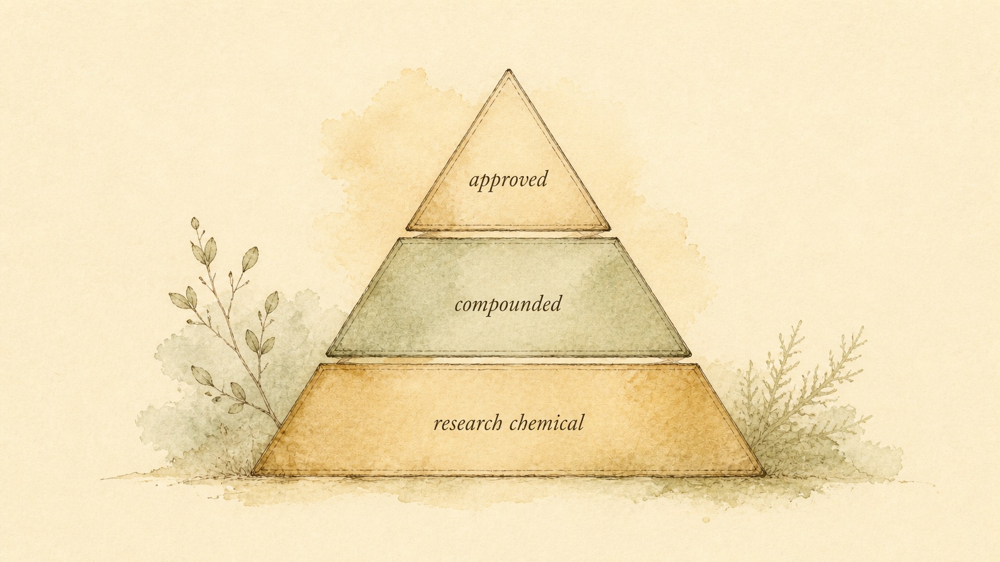
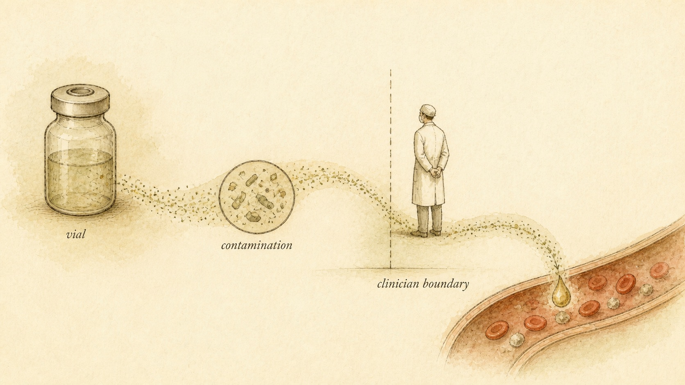

The Grey Market, the Vial, and the Boundary
Eight chapters of this module explained what these molecules are supposed to do inside a body. This closing chapter asks the colder question underneath all of it: what actually arrives in the vial, who is allowed to sell it, and where a learner's own understanding has to stop.
Somewhere between the receptor diagrams of Chapter 2 and the risk discussion in this module's melanocortin chapter sits a question none of the preceding eight chapters could fully answer, because it is not a biochemistry question at all. It is a supply chain question: what actually arrives in the envelope. This module has explained, family by family, what a specific peptide is proposed to do once it reaches the right tissue, angiogenesis and tendon signaling for BPC-157 and thymosin beta-4 (TB-500), copper-dependent collagen and wound signaling for GHK-Cu, host-defense and anti-inflammatory action for KPV and the cathelicidin LL-37, T-cell modulation for thymosin alpha-1, neurotrophic and inhibitory signaling for semax, selank, delta sleep-inducing peptide (DSIP), and cerebrolysin, melanocortin-receptor activity for bremelanotide and melanotan II, and a scattered set of proposed telomerase, mitochondrial, and tissue-protective mechanisms for epithalon, humanin, cibinetide (ARA-290), and vasoactive intestinal peptide (VIP). Every one of those explanations rested on an assumption this closing chapter can no longer make on a learner's behalf: that the molecule described on the page and the molecule sitting in a vial are the same substance.
That assumption is where the real risk in this subject concentrates, and it has almost nothing to do with which receptor a peptide binds. A product can be synthesized in a facility with no quality system at all, filled into a vial at the wrong concentration, contaminated with bacterial endotoxin nobody tested for, or carrying a trace of a heavy metal left behind by an unvalidated purification step, and every one of those failures can happen to a peptide whose receptor pharmacology this module described with complete accuracy. Mechanism explains what a correctly manufactured molecule does inside a body. It says nothing about whether a specific vial, in a specific learner's hands, is that molecule at all. This chapter exists to close that gap honestly, and to close this entire two-course arc the same way.
Our thread through this closing chapter is a learner named Inga, who worked through this catalog's companion module on growth, metabolic, and body-composition peptides earlier this year and came back for this second module because the repair, immune, and neuro compounds interested her more personally, an old tendon injury she still favors, a general curiosity about the immune peptides she had read discussed alongside it. Eight chapters into this module, Inga has built a genuinely strong grasp of mechanism. She can explain what BPC-157 is proposed to do at a vascular growth factor receptor, why thymosin alpha-1 shifts T-cell balance, and why melanotan II's blood pressure and pigmentation risks trace back to the same melanocortin receptor family that gives it its cosmetic tanning effect. What she has not yet had to reckon with, and what brings her into this final chapter with real urgency, is a considerably less comfortable question: now that she understands the biology this thoroughly, does that understanding tell her anything at all about what she would actually be holding if she ever ordered one of these compounds herself.
What "grey market" means for this module's compounds
Start with the label itself, because it appears on nearly every product this module has discussed, and it is doing more regulatory work than its size suggests. Search for almost any compound covered in this module's eight preceding chapters and, alongside the vendor's mechanism claims and dosing charts, you will find a small line of text: "research use only," frequently followed by a second line, "not for human consumption." A grey market is not a black market, and treating the two as equivalent misses exactly the mechanism that makes a grey market its own distinct, and in some ways harder to reason about, category. A black market sells something the law prohibits selling at all. A grey market sells something the law generally permits selling, as a raw chemical intended for legitimate laboratory or research use, to a buyer the seller has no meaningful obligation to verify is actually operating a laboratory.
The label is the hinge the whole arrangement turns on, and it is worth being precise about what it does and does not do. It is not a certification of safety, purity, or identity. It is a piece of regulatory language that shifts legal exposure away from the seller and toward the buyer. A seller who lists a product accurately as a research chemical, and includes the disclaimer, has technically stayed inside a lane the law recognizes, because selling an unapproved chemical compound for a genuine research purpose is not, by itself, illegal in the way selling the same chemical as a drug intended for human use would be. What that seller is very unlikely to do is verify that a specific buyer holds an institutional research protocol or actually intends anything other than what the same product page's injection-site diagrams and community dosing language make obvious it is being sold for. The label protects the seller. It says nothing whatsoever about what is inside the vial.
None of this means a genuine research-supply industry does not exist, or that every seller using this language is acting in bad faith. Laboratories and contract research organizations buy peptide reagents from legitimate suppliers constantly, for real experiments, and that trade is not the subject of this chapter. The grey market this chapter describes is the narrower, far more visible layer of sellers who use the identical "research use only" packaging while marketing unmistakably to individual buyers who intend to use the product on themselves, through community-facing language, injection guidance, and sales channels a genuine laboratory-reagent supplier has no reason to maintain. The honest problem with that layer is not that every vial sold through it is fake. It is that there is no reliable, structural way for an individual buyer to know which situation they are in for any specific vial, because the entire arrangement exists specifically to avoid the testing, inspection, and accountability systems that would answer that question with any confidence.
Four tiers, and why this module does not split cleanly into two
Most informal discussion of peptide sourcing collapses into a binary: a product is either "legit," meaning it came through a pharmacy, or it is "grey market," meaning it did not. That binary works reasonably well for a module built almost entirely around compounds with no regulatory approval anywhere. It does not work for this module, because two of the compounds covered in these nine chapters, bremelanotide and thymosin alpha-1, genuinely occupy a different, higher tier of oversight than the rest of this module's library, and understanding exactly what separates them from their neighbors is one of the most practically useful distinctions this closing chapter can offer.
The first tier is a Food and Drug Administration (FDA)-approved medicine, sold under an approved indication in the United States. In this module, bremelanotide is the clearest example. According to Clayton, Kingsberg, Portman, Sadiq, Krop, Jordan, and Simon (2022), bremelanotide, a melanocortin receptor agonist, is Food and Drug Administration-approved for treating acquired, generalized hypoactive sexual desire disorder in premenopausal women, and its safety profile was characterized across a clinical development program comprising 3,500 subjects in 43 completed studies, with the most common adverse events being nausea, flushing, headache, and injection site reactions, alongside a documented, small but statistically significant increase in blood pressure that the study's authors specifically flagged as a reason for caution in patients with cardiovascular risk. That is what an approved medicine's safety picture looks like: a specific formulation, a specific manufacturer, a defined indication, and a large, published dataset describing exactly what happens when it is used as labeled. Melanotan II, discussed alongside bremelanotide in this module's melanocortin chapter, activates a closely related family of receptors and is marketed for a similar cosmetic tanning effect, and it holds no equivalent approval anywhere. The receptor family is a near neighbor. The regulatory status is not remotely close.
The second tier belongs almost entirely to thymosin alpha-1, and it is a genuinely unusual case worth naming specifically because it does not fit neatly into either "approved" or "grey market." According to Tuthill (2007), writing from within the company that licensed thymosin alpha-1's commercial and patent rights for regions outside the United States and Europe, the compound obtained regulatory approvals in more than thirty countries and has been in commercial sale under a registered trade name for chronic viral hepatitis and as an immune adjunct, following the completion of the toxicology and clinical development programs each national regulator required. Thymosin alpha-1 is, in a real and specific sense, an approved medicine, just not in every jurisdiction, including not in the United States, where it has never completed the equivalent approval pathway. That distinction matters enormously for how a learner should read a bottle: a compound with genuine registered approval and decades of monitored clinical use somewhere in the world carries a fundamentally different evidentiary and manufacturing history than a compound that has never been reviewed by any regulator anywhere, even when both are being sold, in the United States, through the identical "research use only" channel.
The third tier is a compounded product, prepared by a licensed pharmacist for an individual patient (a 503A pharmacy, operating primarily under state board oversight) or in batches by a Food and Drug Administration-registered outsourcing facility (a 503B facility, operating under current Good Manufacturing Practice, GMP, standards, the federally enforced set of requirements covering facility cleanliness, equipment validation, and batch testing that licensed manufacturers must follow). A small number of this module's compounds, BPC-157 among them, have at various points been compounded by licensed pharmacies for individual patients, and it matters to say plainly that compounding is real, licensed medicine, prepared by a pharmacist, even when the underlying peptide has never itself completed an approval pathway. It is also worth naming, without treating it as settled, that United States regulators have specifically scrutinized whether several of this module's compounds belong on the list of substances a compounding pharmacy may legally use at all, precisely because the underlying safety and manufacturing data for a compound like BPC-157 remains thin. The fourth tier is the unapproved research chemical described in the previous section, and it is where nearly the entire remaining catalog of this module, BPC-157, thymosin beta-4 (TB-500), GHK-Cu, KPV, LL-37, semax, selank, DSIP, cerebrolysin, melanotan II, epithalon, humanin, ARA-290, and VIP, actually sits when sold through the online channels most learners in this module have encountered.

From vial to bloodstream: where sterility fails
An injectable product, regardless of which tier it comes from, has to clear a bar a topical cream or an oral capsule does not: it has to be sterile, free of living microorganisms, and free of clinically significant bacterial endotoxin, a fever-inducing byproduct of bacterial cell walls that survives even after the bacteria that produced it are dead. This bar is not a minor manufacturing footnote. It is the entire reason sterile pharmaceutical manufacturing is one of the most heavily inspected activities in medicine, and it is the single largest practical risk in this closing chapter, because it applies even when a peptide's chemical identity and labeled dose happen to be exactly correct.
The consequences of a sterility failure are not abstract. An injection that introduces live bacteria into tissue or the bloodstream can produce a localized abscess at the injection site, a bloodstream infection, or, in a severe case, sepsis, a life-threatening systemic response to infection. An injection that introduces bacterial endotoxin, even from bacteria that never survived the manufacturing process, can trigger fever, chills, a sharp drop in blood pressure, and, at high enough exposure, a life-threatening reaction, because the immune system reacts to the endotoxin molecule itself, independent of whether the organism that produced it is still alive. The single most catastrophic documented illustration of what happens when this exact failure occurs at scale did not come from an online peptide seller. According to Kainer et al. (2012), a 2012 outbreak traced to a single United States compounding pharmacy that had shipped fungus-contaminated methylprednisolone for epidural and paraspinal injection resulted in 66 documented cases of fungal meningitis, stroke, spinal infection, or epidural abscess, with eight deaths, and with symptom onset arriving a median of 18 days after the injection, long enough that many patients did not connect a new headache back to an injection weeks earlier. That outbreak happened inside a licensed, inspected pharmacy operating in the third tier this chapter described above, not an unregulated overseas research-chemical seller, and it still produced a mass-casualty event that regulators did not catch until people were already sick.
Direct testing of peptide products sold outside the approved pharmaceutical channel confirms that this is not a hypothetical worry layered on top of a mostly clean supply. According to Ashraf, Mackey, Vida, Kulcsar, Schmidt, Balazs, Domian, Li, Csako, and Fittler (2024), test purchases of injectable peptide products from illegal online pharmacies, evaluated with microbiological sterility and endotoxin testing alongside quantitative chemical analysis, found that while the purchased samples were free of viable microorganisms at the time of testing, bacterial endotoxin was detected in every sample tested, at levels ranging from 2.16 to 8.95 endotoxin units per milligram. None of that endotoxin was visible on inspection. A vial that looks perfectly clear, with no cloudiness and no visible particles, tells a buyer nothing about whether it carries a clinically significant endotoxin load, because endotoxin does not require a living organism to be present, and it cannot be detected by looking at a vial. The only way to know is a validated laboratory test, the same test a licensed manufacturer or compounding pharmacy is required to run as a routine condition of selling a sterile product at all, and a research-chemical seller has no obligation, and frequently no facility, to run.

Mislabeling: the compound, and the amount, on the vial
Sterility is one axis of risk. A second, entirely separate axis is identity: whether the vial actually contains the compound its label names, at the concentration the label states. These are not hypothetical concerns raised for effect. The same test-purchase study that documented universal endotoxin contamination also examined content accuracy directly, and its finding is worth sitting with rather than skimming past, because of how far the actual numbers diverge from the label. According to Ashraf et al. (2024), quantitative chemical analysis of the purchased peptide samples found measured peptide purity ranging from 7.7 to 14.37 percent, a fraction of the 99 percent purity claimed on the product labels, while the same samples showed peptide content that substantially exceeded the labeled milligram amount, by 28.56 to 38.69 percent, a combination the researchers characterized as products that were probable substandard and falsified, with visual packaging inspection alone flagging noncompliance in well over half of the criteria examined.
Read that finding carefully, because the two numbers point in directions a learner might not expect. The vials in that study were not simply weak or underdosed, the more intuitive failure mode. They contained more total peptide mass than the label claimed, while the fraction of that mass that was actually the correctly assembled target molecule was a small slice of what the label promised, with the remainder made up of degradation products or synthesis byproducts. A buyer weighing a vial's declared milligram content against an expected effect has no way to know, from the outside, whether they are looking at an accurately labeled product, an overfilled one, an underpurified one, or some combination of the three, because nothing about the packaging, the price, or the vendor's confidence in their own marketing copy correlates reliably with which situation is actually true.
It matters to be precise about what this specific study does and does not establish for this module's own compound library. Ashraf et al. (2024) tested semaglutide products, a glucagon-like peptide-1 (GLP-1) compound outside this module's own catalog, not BPC-157, thymosin beta-4, or the other peptides covered in these nine chapters directly. What it establishes, with real analytical rigor, is the underlying pattern this entire chapter has been describing: whenever an independent laboratory has actually tested peptide products sold outside the regulated pharmaceutical channel, a meaningful and sometimes dramatic fraction of what gets tested does not match its own label, across multiple product categories and multiple countries. This module's own compounds move through comparable unregulated channels, with no structural reason to expect a cleaner result. A mislabeling failure, unlike a sterility failure, rarely produces an obvious symptom that flags the problem. A vial containing far less correctly assembled peptide than declared simply produces no noticeable effect and gets quietly written off as "this batch was weak." A vial containing an unexpected byproduct can produce an effect, sometimes an unwanted one, that gets attributed to the wrong molecule entirely, because nobody involved has any structural reason to suspect the label was ever accurate.
Reconstitution and handling: where a learner joins the manufacturing chain
Most of this module's peptides are shipped as a lyophilized powder, freeze-dried for stability, and have to be reconstituted, mixed with a liquid, before they can be drawn into a syringe. In a regulated pathway, that step is either performed by a pharmacist under controlled conditions or handed to a patient with specific, validated instructions: sterile bacteriostatic water, a single-use vial stopper, a defined storage temperature and shelf life once mixed. In the unregulated channel most of this module's compounds move through, that entire step, and every risk embedded in it, gets handed to the buyer with no equivalent instruction, no equivalent product, and frequently no warning that the step matters at all.
According to Van Hout and Brennan (2013), an in-depth case study of an individual's experience self-administering an unlicensed melanotan tanning product, the user described specific self-taught handling practices, not reusing needles, keeping the product refrigerated, disinfecting and rotating injection sites, and using sterilized water to dissolve the powder, alongside an explicit awareness that the product was unlicensed, unregulated, and possibly contaminated. That account matters for two reasons that pull in opposite directions. It shows that a careful, self-taught buyer can approximate some of the technique a regulated pathway would otherwise provide, which is a genuine, if partial, harm-reduction insight. It also shows, by the same account, that the buyer was operating entirely on self-taught practice, with no pharmacist verifying technique, no manufacturer specifying a validated shelf life once the product was reconstituted, and no external check on any of it, precisely the gap this chapter has described throughout. A careful individual can reduce some of the risk in this step. No individual, however careful, can replace the testing infrastructure that would confirm the technique actually worked.
The specific errors that matter most at this stage are worth naming directly, because they are exactly the kind of detail a mechanism-focused education tends to skip past. Reconstituting a peptide with ordinary tap or bottled water, rather than sterile water intended for injection, introduces exactly the kind of microbial risk the previous section described, with none of the endotoxin testing that would catch it. Reusing a needle to draw from the same vial stopper repeatedly, rather than using a fresh needle for each draw, creates a growing opportunity for contamination to accumulate in a vial that may then be used across several separate injections. Storing a reconstituted peptide at room temperature, rather than refrigerated, for longer than a manufacturer's own instructions specify, whether it is the correct product or not, allows both microbial growth and chemical degradation of the peptide itself, meaning a product that started out correctly labeled and free of contamination can still degrade or become contaminated well before a buyer finishes the vial.
Impurities and heavy metals: the problems that produce no symptom at all
A third contamination category is subtler than a missing peptide or a fever-inducing endotoxin load, because it can produce no acute symptom whatsoever and take years to manifest: heavy metal and process-impurity contamination carried over from an unregulated synthesis process. Peptide manufacture, whether by solid-phase chemical synthesis or recombinant biological production, uses reagents, catalysts, and purification steps that can leave trace residues behind if the process is not deliberately controlled and tested to remove them. Lead, cadmium, mercury, and arsenic are the four metals of greatest documented concern in pharmaceutical and supplement contexts, alongside other metals, including chromium, nickel, and various platinum-group metals used in some synthesis chemistry, that can appear as residual impurities when a manufacturer is not specifically screening for and limiting them.
According to Abernethy, Destefano, Cecil, Zaidi, and Williams (2010), writing from the United States Pharmacopeia (USP)'s own documentary standards division, setting appropriate limits for metal impurities in medicines and dietary supplements is a genuine, ongoing technical challenge even within the fully regulated pharmaceutical system, precisely because these metals occur ubiquitously in the environment and because reliably detecting them at clinically meaningful thresholds requires real analytical infrastructure, not a visual inspection or a vendor's assurance. That is the standard a licensed pharmaceutical manufacturer, and a licensed compounding pharmacy operating under United States Pharmacopeia quality benchmarks, is expected to meet, with a compendium, an inspection process, and validated analytical methods standing behind the expectation. A grey-market manufacturer has none of that infrastructure and no external requirement to build it, and unlike a sterility failure, which frequently produces a fast, attributable illness, chronic low-level heavy metal exposure tends to accumulate quietly, contributing to kidney, neurological, or cardiovascular harm over a timescale long enough, and diffuse enough in its presentation, that almost nobody would trace it back to a specific vial from months or years earlier.
Peptide-specific synthesis errors carry a related concern that sits alongside heavy metals rather than replacing them. Solid-phase peptide synthesis can produce truncated sequences, where the amino acid chain terminates early, or deletion and substitution sequences, where one or more residues in the intended chain are missing or swapped, alongside the correctly assembled target peptide. A rigorous manufacturing process uses high-performance liquid chromatography (HPLC) and mass spectrometry to separate the correct sequence from these byproducts and verify what remains meets a defined purity threshold, exactly the testing a legitimate reagent supplier or pharmaceutical manufacturer performs and documents on a certificate of analysis. Whether any specific grey-market vial received that same purification and verification is, once again, not something a buyer can determine from the outside, and an impure or truncated peptide is not simply a weaker version of the intended compound. It is frequently a different molecule altogether, with its own uncharacterized biological activity, or none at all, sitting in the same vial as whatever correctly formed peptide made it through.
The legality picture: three separate questions, one sentence
It is tempting, after everything the preceding sections have described, to reach for a single verdict, legal or illegal, and stop there. That temptation is exactly the error this section exists to correct, because "legal to sell as research" and "legal to use" and "safe to use" are three separate questions, answered by three separate bodies of law and evidence, and a confident answer to one of them is routinely mistaken for an answer to all three. A seller who lists a compound accurately as a research chemical and ships it with a disclaimer has, as this chapter's opening section described, generally stayed inside the legal lane available to that specific transaction. That fact says nothing about whether a buyer's actual, undisclosed use of the product, injecting or ingesting it as a person rather than testing it as a researcher, falls inside any legal lane at all in most jurisdictions, and it says absolutely nothing about whether the specific vial the buyer received is sterile, correctly identified, or free of the impurities the previous sections described in detail.
Layer this module's own compound list onto that three-part distinction and the honest picture becomes concrete rather than abstract. Bremelanotide is legal to obtain in the United States the way any prescription medicine is legal to obtain, through a valid prescription from a licensed prescriber, for its labeled indication, dispensed by a pharmacy operating under normal pharmaceutical law. Thymosin alpha-1 is legal to obtain, and legally used clinically, in the more than thirty countries where it holds a registered approval, through whatever prescribing and pharmacy framework that country's regulators require, while occupying a considerably murkier position in the United States, where it has never completed an equivalent approval pathway and is overwhelmingly encountered through the same research-chemical channel as this module's less-studied compounds. Every other compound in this module's nine chapters, BPC-157, thymosin beta-4, GHK-Cu, KPV, LL-37, semax, selank, DSIP, cerebrolysin, melanotan II, epithalon, humanin, ARA-290, and VIP, is, at the time of this writing, sold in the United States almost entirely through the research-chemical channel this chapter has spent its length describing, with no approved medical indication, no compounding pathway most of them can lawfully move through, and a legal status for individual human use that ranges from genuinely unsettled to squarely outside what most state and federal law permits, depending on the specific compound, the specific state, and the specific intended use.
None of that is a legal opinion this course is positioned to offer for any individual's specific situation, and this chapter is not attempting to render one. What it can responsibly say, because it follows directly from the tier structure and the contamination evidence already covered, is that the legal question and the safety question point in the same direction for nearly this entire module's compound list, and that direction is toward considerably more uncertainty than the confident language on most vendor pages suggests. A seller staying inside their own narrow legal lane does not make a buyer's use of the product legal, and it does not make the specific vial safe, and collapsing those three separate questions into one reassuring sentence, "it's legal to buy, so it's fine," is precisely the move this entire chapter has been built to unwind.
Case study: Inga and the exception that could not carry the rest
Running Inga's question back through this chapter resolves it the same way this course has resolved every earlier misconception in this catalog, by tracing it back to the actual evidence rather than dismissing the instinct outright. Her observation is correct as a fact: bremelanotide holds a genuine Food and Drug Administration approval, and thymosin alpha-1 holds genuine approvals in dozens of countries, each backed by the kind of toxicology and clinical development program this chapter's second section described. Where her reasoning needed correcting is the leap from two genuine exceptions to a general upgrade in confidence about the other fourteen compounds this module covers. Section two of this chapter made the actual scale of that gap explicit: two compounds with real regulatory approval, sitting alongside fourteen others with none, sold through the identical online channel, frequently by the identical sellers, described in marketing language that makes no distinction whatsoever between the two categories. A vendor page selling melanotan II next to bremelanotide, using similarly confident language for both, is not evidence that melanotan II shares bremelanotide's regulatory status. It is evidence that marketing language is not a reliable signal of regulatory status at all, which is close to the opposite lesson Inga's instinct had drawn from the same two facts.
Her second assumption, which surfaced once the first was corrected, was that BPC-157's genuinely large body of preclinical literature, the receptor mechanism papers, the animal-model tendon and gut-healing studies this module's second chapter covered in depth, functioned as a substitute for human safety data. According to McGuire, Martinez, Lenz, Skinner, and Cushman (2025), a narrative review evaluating BPC-157 specifically for musculoskeletal healing found broad preclinical support for its regenerative and cytoprotective effects across numerous animal models, alongside a striking gap on the human side: only three pilot studies have examined BPC-157 in humans at all, no adverse effects were reported in those small studies, but the authors concluded that, given the compound's growing popularity and wide availability through non-regulated sources, it should be considered investigational and used with caution until well-designed human trials exist. A large stack of animal papers is not a small stack of human papers wearing a disguise. It is a different rung on the evidence ladder entirely, and Inga's instinct to treat volume of published mechanism as a stand-in for volume of human safety evidence is exactly the substitution this module's own first chapter warned against.
What Inga actually walked away with matters more than a yes-or-no verdict on any single compound, because a flat verdict was never something this chapter could responsibly hand her. She left understanding that a genuine regulatory exception, real as it is for bremelanotide and thymosin alpha-1, does not transfer its legitimacy to a neighboring compound simply because both are discussed in the same chapter, sold on the same vendor page, or share a receptor family. She also left understanding that a large body of mechanistic and animal literature, however genuinely interesting and however much of this module's nine chapters were built to explain it accurately, is not the same evidence as a large body of monitored human use, and that distinguishing the two is not a technicality, it is the entire difference between what happened to bremelanotide and thymosin alpha-1 and what has, so far, not happened to almost everything else on this module's list.
Where both courses close: the ladder, the gap, and the boundary
This module opened, in its first chapter, with an evidence ladder, a simple, honest tool for calibrating how much confidence a specific claim about a specific peptide actually deserves: human randomized controlled trials (RCTs) at the top, smaller human studies below that, animal and preclinical evidence below that, and anecdote and vendor marketing at the bottom. It is worth returning to that ladder explicitly here, at the true close of this two-course arc, because this closing chapter's entire subject, contamination, mislabeling, handling error, and legal status, sits on top of that ladder rather than beside it, and seeing the two together is the most honest way either course could end.
Place this module's own compounds on that ladder honestly, and the picture is sobering in a way this course has tried never to soften. Bremelanotide sits near the top rung, its efficacy and safety established across the phase 3 program described earlier in this chapter. Thymosin alpha-1 sits meaningfully high as well, with decades of registered clinical use and a genuine, if geographically bounded, regulatory approval behind it. Almost everything else in this module's nine chapters, from BPC-157's proposed tissue-repair activity through the cognitive claims made for semax, selank, DSIP, and cerebrolysin, to epithalon, humanin, ARA-290, and VIP's proposed longevity benefits, sits meaningfully lower, resting on animal evidence, a handful of small uncontrolled human studies, or mechanism-based reasoning and anecdote. Across this course's two modules combined, eighteen chapters of receptor pharmacology, growth factor biology, immune signaling, and now sourcing risk, a small minority of the entire compound library this course has covered sits genuinely near the top of that ladder. Most of it does not, and this course has tried to say so plainly, compound by compound, rather than let a confident tone substitute for an honest evidence grade.
Now layer this closing chapter's subject on top of that already-honest picture, because it adds an entirely separate axis of uncertainty the evidence ladder alone was never built to measure. A randomized controlled trial establishes what bremelanotide does, in a specific, correctly manufactured, correctly dosed formulation, under controlled clinical conditions. It says nothing about what is actually inside an unverified vial sold outside the system that ran that trial, and the ladder's top rung offers no protection at all against a mislabeled, contaminated, or improperly reconstituted product, because the ladder was designed to grade evidence about a molecule's clinical effect, not to grade the manufacturing chain a specific buyer's vial actually passed through. A learner who has correctly identified a compound as sitting high on the evidence ladder has answered one real question. They have not yet answered whether the specific product in front of them is the thing the ladder was actually describing.
This is the single idea this closing chapter, and in a real sense this entire two-course arc, has been building toward. Understanding a compound's mechanism, however thoroughly, answers the biology question. It does not answer the manufacturing question, and it does not answer the legal question, and treating strong mechanistic understanding as though it substitutes for either is the exact error this chapter has spent its length correcting, in Inga's case and in every learner's case this course was written for. The legal status of any specific peptide varies by jurisdiction, by whether it holds regulatory approval anywhere, and by how it is actually being sourced, and neither this chapter nor this course offers legal advice of any kind for an individual's specific situation. What this course can responsibly offer, across both of its modules and all eighteen chapters, is the biochemical and evidentiary literacy to ask a sharper question, of a source, of a claim, of a vendor page's confident tone, and to recognize precisely the point at which that literacy runs out and a different kind of expertise has to take over.
That handoff point is not a failure of anything a learner has built across two full courses of real, hard-won understanding. A licensed clinician can evaluate a specific person's actual health history, order and interpret real bloodwork, and reach a judgment no course, however thorough, is built to reach on a learner's behalf. A functioning regulatory system, imperfect as it visibly is in practice, exists to apply the testing and manufacturing standards this chapter has described, sterility validation, endotoxin testing, purity verification, batch by batch, at a scale no individual buyer can replicate alone, however carefully that buyer reconstitutes a vial. Recognizing that clinical judgment and regulatory infrastructure sit outside what any course can substitute for is not a hedge added to soften this closing chapter's ending. It is the actual conclusion that eighteen chapters of honest mechanism and honest evidence grading, across both of this catalog's peptide courses, were always building toward.
This is exactly the discipline both of this catalog's peptide courses have tried to model, chapter after chapter, and not only in this final one. Mechanism explains what a molecule does, in general, under conditions a researcher controlled and verified. It cannot verify what is inside one specific vial in one specific learner's hands, and it cannot substitute for the clinical judgment a real medical decision, for a real person with a real health history, actually requires. That is not a smaller use for everything two full courses have built. It is the most responsible use available for it, exactly what a course built on honest mechanism and honest evidence grading was always meant to produce, carried forward by a learner into places this course itself cannot follow.
Key Takeaways
- A "research use only, not for human consumption" label is a liability shield that shifts legal exposure toward the buyer. It certifies nothing about a specific vial's sterility, identity, or purity, regardless of how the product is actually marketed and sold.
- This module's compounds span four tiers of oversight: an FDA-approved medicine (bremelanotide), a compound approved and clinically used in more than thirty other countries but not the United States (thymosin alpha-1), a compounded product prepared by a licensed pharmacist, and an unapproved research chemical, the tier that holds nearly every other compound this module covers.
- Sterility and bacterial endotoxin failures are invisible to visual inspection and have produced documented mass-casualty outbreaks even inside licensed, inspected United States compounding pharmacies. Direct testing of unregulated online peptide products found detectable endotoxin in every sample tested.
- Independent analytical testing of unregulated peptide products has found measured purity as low as a small fraction of the labeled amount, alongside total peptide content that exceeded the labeled milligram amount, a combination that means neither an accurate label nor a felt effect can be assumed from the outside.
- Reconstitution and handling errors, non-sterile water, reused needles, improper storage, sit alongside heavy metal and synthesis-impurity contamination as separate, largely invisible risks. Careful technique can reduce some of this risk; it cannot replace the testing infrastructure a regulated manufacturing pathway provides.
- A genuine regulatory exception for one or two compounds in a shared category does not transfer legitimacy to its neighbors, and a large body of animal or mechanistic literature is not the same evidence as a large body of monitored human use. "Legal to sell as research," "legal to use," and "safe to use" are three separate questions, and none of them answers the other two.
This closes the nine-chapter arc of Peptides II: Repair, Immune, Neuro and Systemic, and with it, the full eighteen-chapter arc this catalog built across both peptide modules. The receptor pharmacology, the honest evidence grading, and this closing chapter's sourcing, contamination, and legal accounting were built to travel together. Carrying all three forward, and not just the mechanism that was always the easiest part to enjoy, is the actual, hard-earned outcome both courses were written to produce.
References
Abernethy, D. R., Destefano, A. J., Cecil, T. L., Zaidi, K., & Williams, R. L. (2010). Metal impurities in food and drugs. Pharmaceutical Research, 27(5), 750-755. https://doi.org/10.1007/s11095-010-0080-3
Ashraf, A. R., Mackey, T. K., Vida, R. G., Kulcsar, G., Schmidt, J., Balazs, O., Domian, B. M., Li, J., Csako, I., & Fittler, A. (2024). Multifactor quality and safety analysis of semaglutide products sold by online sellers without a prescription: Market surveillance, content analysis, and product purchase evaluation study. Journal of Medical Internet Research, 26, e65440. https://doi.org/10.2196/65440
Clayton, A. H., Kingsberg, S. A., Portman, D., Sadiq, A., Krop, J., Jordan, R., & Simon, J. A. (2022). Safety profile of bremelanotide across the clinical development program. Journal of Women's Health, 31(2), 171-182. https://doi.org/10.1089/jwh.2021.0191
Kainer, M. A., Reagan, D. R., Nguyen, D. B., Wiese, A. D., Wise, M. E., Ward, J., Park, B. J., Kanago, M. L., Baumblatt, J., Schaefer, M. K., Berger, B. E., Marder, E. P., Min, J. Y., Dunn, J. R., Smith, R. M., Dreyzehner, J., & Jones, T. F. (2012). Fungal infections associated with contaminated methylprednisolone in Tennessee. New England Journal of Medicine, 367(23), 2194-2203. https://doi.org/10.1056/NEJMoa1212972
McGuire, F. P., Martinez, R., Lenz, A., Skinner, L., & Cushman, D. M. (2025). Regeneration or risk? A narrative review of BPC-157 for musculoskeletal healing. Current Reviews in Musculoskeletal Medicine, 18(12), 611-619. https://doi.org/10.1007/s12178-025-09990-7
Tuthill, C. (2007). Issues in pharmaceutical development of thymosin alpha1 from preclinical studies through marketing. Annals of the New York Academy of Sciences, 1112, 351-356. https://doi.org/10.1196/annals.1415.007
Van Hout, M. C., & Brennan, R. (2013). An in-depth case examination of an exotic dancer's experience of melanotan. International Journal of Drug Policy, 25(3), 444-450. https://doi.org/10.1016/j.drugpo.2013.10.008